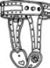

\1\2ğaç\3
Bekaret kemeri ne işe yarar?

Haçlı Seferi’ne katılan bir askerin karısına bekaret kemeri bağlayıp anahtarını da boynuna asarak savaşa gittiği kanısı, okurları heyecanlandırmak için tasarlanmış bir 19. yüzyıl fantezisidir.
Ortaçağ’da bile bekaret kemeri kullanıldığına dair pek az kanıt vardır. Bekaret kemeriyle ilgili bilinen ilk çizim 15. yüzyıla aittir. Konrad Kyeser’in Bellifortis’i (Savaşma Gücü) Haçlı Seferleri’nin sona ermesinden çok sonra, çağdaş askeri donanım üzerine yazılmış bir kitaptı. Kitapta Floransalı kadınların giydiği “sağlam demir külot”un bir çizimi yer alıyordu.
Şekilde anahtar açıkça görülmektedir; bu da kemerin kontrolünün erkekte değil, (Floransalı züppelerin istenmeyen ilgisinden korunmak için) kadında olduğu anlamına gelmektedir.
Müzelerdeki koleksiyonlarda, “Ortaçağ’daki” bekaret kemerlerinin çoğunun gerçekliğinin şüpheli olduğu görüldü ve bunlar gösterimden kalktı. Muhtemelen bu bekaret kemerlerinin çoğu, tıpkı “Ortaçağ’daki” işkence aletleri gibi, 19. yüzyılda Almanya’da “uzman” koleksiyoncuların merakını gidermek için yapıldı.
Aynı zamanda 19. yüzyılda yeni bekaret kemerlerinin satışında bir artış görüldü; ama bunlar kadınlar için değildi.
Viktorya dönemi tıp kuramına göre mastürbasyon sağlığa zararlıydı. Ellerinin rahat durmayacağı düşünülen erkekler bu faydalı çelik külotları giymeye zorlanıyordu.
Ama satışlardaki asıl patlama, “sex shop”ların büyüyen bağlama fantezisi piyasasından yararlanmasıyla birlikte, son 50 yılda yaşandı. Günümüzde, Ortaçağ’dakinden çok daha fazla bekaret kemeri var. Paradoksal biçimde, seksi önlemek için değil, uyarmak için varlar.